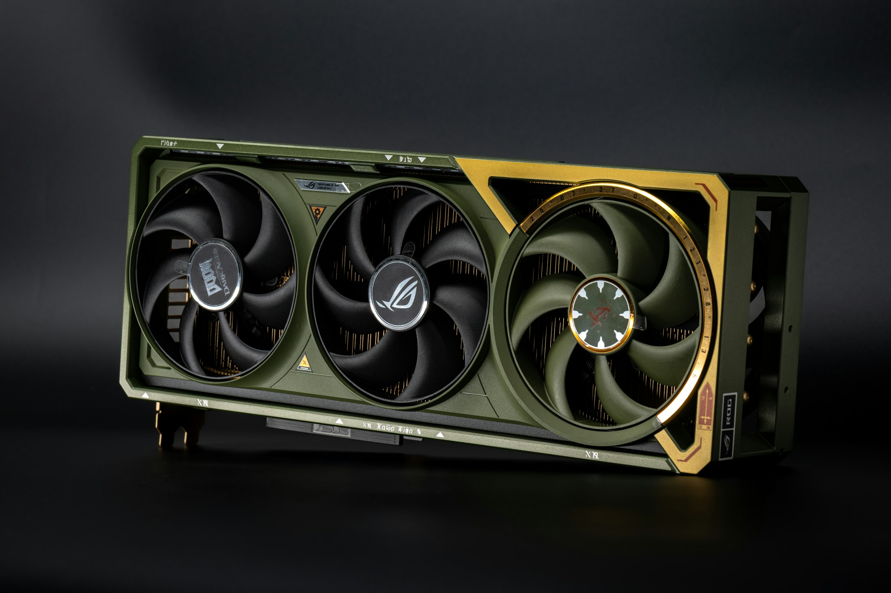
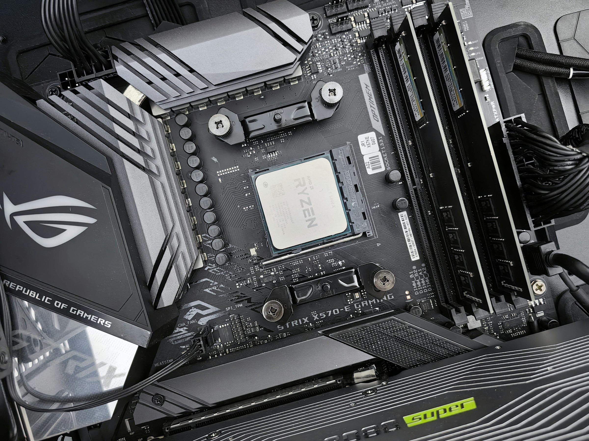
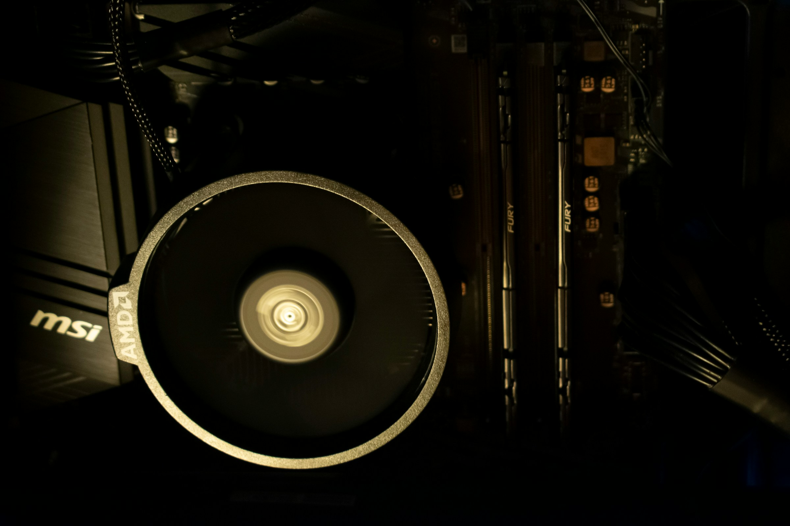
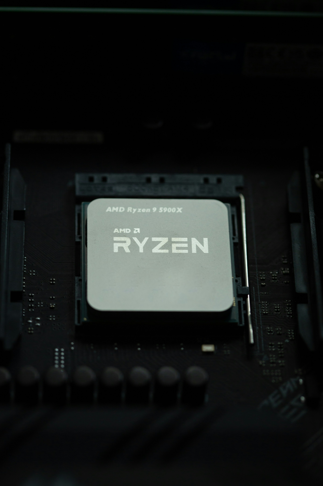

Komponenteksperten






Velkommen til Komponenteksperten! Her kan du lære alt om datamaskinens viktigste komponenter og hvordan de fungerer sammen.
Utforsk våre ressurser ved å klikke på knappene i navigasjonsmenyen over, og få innsikt i teknologiforståelse, optimalisering av systemytelse og mye mer.
Denne siden er for å enkelt forstå datakomponenter, og bli stabil på kunnskapen ved å ta vår quiz.
Du kan også trykke på bilder, for å gjøre de større og mer synlige
Lær om komponenter
Utforsk de viktigste delene i en datamaskin og forstå hvordan de fungerer.
Se sammenhengen
Forstå hvordan komponentene samarbeider for å gi deg en god brukeropplevelse.
Test kunnskapen din
Ta vår quiz og se hvor mye du har lært om datakomponenter!
Komponenter
De fleste har en PC, eller brukt en PC i livet sitt. Men har du egentlig tenkt på hvordan den fungerer? I denne teksten skal jeg forklare komponentene, fordi en PC er ikke bare magi.
Prosessor (også kalt CPU)
En prosessor er det noen vil kalle for "hjernen til en datamaskin. Mange er ikke så enig siden alle delene til en datamaskin på sett og hvis er en del av "hjernen", men prosessoren er der det meste av dataen blir behandlet. Prossesoren har mange transistorer som er enten ladet eller ikke, dette kan du kalle for av eller på, eller som i dataspråk 0 og 1. Fordi en prosessor jobber kun med 1 og 0.

Minne (også kalt RAM)
Minne, også kjent som RAM, og står for Random Access Memory. Hva minne er ligger litt i navnet, ved at det er et minne. RAM er kortvarig lagring ved hjelp av kondensatorer som er enten ladet, eller ikke som signaliserer 1 og 0. Grunnen til at RAM er minne og ikke lagring er fordi at man ikke husker alle minner. Jobben til RAM er å få data fra lagringsenheten din, som kan for eksempel kan være en SSD eller hardisk osv. Denne dataen den får fra fra en lagringsenhet og til RAM for å lagres der midlertidlig for at prosessoren skal behandle dataen. Et godt eksempel på dette er når du laster inn på et spill, eller åpner et program. Da overføres for eksempel filene til spillverdenen fra lagringsenheten din, eller fra internett, og gjøres klar i minne til prosessoren å behandle. RAM er essensielt siden at for eksempel en harddisk er såpass treg at den ikke vil klare å holde seg på farten en prosessor trenger data. Det er viktig å si at RAM sin lagring beholdes helt til at den ikke er nødvendlig lengre, og all data på RAM forsvinner når datamaskinen skrues av.

Hovedkort (også kalt motherboard, MOBO)
Et hovedkort er på en måte ganske enkelt konsept. Det er hvor alle komponentene kobles sammen; men det er ikke bare det, fordi dette er også hvor man kobler USB, Ethernet, lyd og mer til. Hovedkortet har ofte jobben med å behandle lyd.

Grafikkort (også kalt GPU)
Grafikkortet er en ganske kompleks komponent i en datamaskin, fordi den er på en måte en datamaskin i seg selv. Grafikkortet har en prosessor, som er hjernen grafikkortet, den har minne, og mer. Grafikkort blir oftest brukt til video og grafikk, og er for eksempel grafikken til et videospill, eller noe så enkelt som bilde til skjermen med en HDMI-kabel eller Displayport-kabel. I nyere tid har grafikkort blitt brukt ekstremt masse til AI-teknologi og cryptomining til for eksempel Bitcoin. Dette har ført til at prisene på grafikkort ble skutt i været og du måtte sleppe flere tusen fra lommeboka for å få tak i et. Endelig har prisene begynt å synke igjen, men de er fortsatt ganske høye.

Harddisk (Også kalt HDD)
Harddisk er en lagringsenhet som er ganske treg, på grunn at at den har mekaniske deler inni. Den bruker en leser, som leser det som står på selve platen. Harddisk er en av de billigste og relativt trygge for å lagre data.

SSD (også kalt Solid State Drive)
SSDen er dagens lagringsenhet, i form av at den har tatt over bruken fordi den er masse raskere enn en harddisk. Harddisken har bevegelige deler, mens som i navnet så er en SSD solid driv. Altså har ikke en SSD noen bevegende deler, og som gjør at en SSD på en stort sett varer lengre enn en SSD. SSD finnes i mange varianter, fra en boks som ser veldig ut som en harddisk, til en tynn brikke som sitter i hovedkortet. NVMe M.2 SSD er en av de raskeste SSDene. Mye av grunnen er fordi at de sitter rett i hovedkortet uten en kabel som kan lage delay.

Sammenhengen
La oss utforske hvordan de forskjellige delene i datamaskinen samarbeider som et team for å sikre en enkel og effektiv brukeropplevelse.

Samkjørt handling
Forestill deg PCen din som et lite samfunn. Prosessoren, eller hjernen, fungerer som en sjef som gir instrukser og oppgaver til de andre komponentene. RAM, eller hukommelsen, virker litt som en arbeidsbenk der informasjon midlertidig lagres for rask tilgang.

Effektiv datastrøm
For å sikre jevn drift, er stabile veier og ruter viktig. Bussene i PCen, som USB eller PCI Express (PCIE), er som motorveier som lager en fri flyt av informasjon mellom komponentene. Jo bredere veiene, jo raskere kan dataene gå.

Balansert ytelse
Alle komponentene arbeider sammen for å levere best mulig ytelse. Grafikkortet fokuserer på å produsere fine bilder og videoer, mens prosessoren tar seg av mer komplekse beregninger. Dette kan sammenlignes pittelitt med et musikkorkester der hver spiller har sin spesifikke rolle, men sammen skaper de fin musikk.

Samarbeid
Alt i alt representerer PCen din et fint eksempel på samarbeid og samspill. Hver komponent samarbeider og støtter de andre for å sikre at du får den optimale opplevelsen hver gang.
Eksempel i spill
Når du trykker på "spill" for å åpne Fallout 3 for eksempel, begynner prosessoren å jobbe raskt og sender en forespørsel til RAM for å få tak i alle dataene spillet trenger fra harddisken din, en innlastningsskjerm er overføringen av data fra harddisken til RAM-brikkene. Mye av dataene RAM-brikkene inneholder når du spiller er hendelser. Et godt eksempel på dette er spillet BeamNG.drive, der store deler av spillet går ut på krasjing, og derfor er det masse som skjer når du krasjer, alt dette som kan skje, må allerede ligge klart lagret på RAM-brikkene, og derfor tar akkurat det spillet mye RAM. Grafikkortet hopper så inn og begynner å hente frem de fine bildene og effektene du ser på skjermen din. Fra hovedmenyen til loadingscreenen og til slutt inn i spillet, arbeider hver del sammen for å gi deg den ultimate spillopplevelsen. Mens alt dette pågår, jobber også kjølesystemet i bakgrunnen for å holde temperaturen nede og sørge for at ingenting blir for varmt.

BIOS
Før operativsystemet kommer opp på skjermen din, har vi BIOS. Du kan på en måte si at det er datamaskinens egen personlige trener som hjelper den med å komme i form før den begynner å jobbe. BIOS sjekker alle delene for å sørge for at de er klare til å jobbe sammen. Det er den første som våkner opp når du trykker på power-knappen, og sørger for at alt er klart til handling.

Juster innstillingene med forsiktighet
I BIOS kan du gjøre en rekke ting for å tilpasse hvordan PCen din oppfører seg. Du kan endre oppstartsenheter, justere viftehastigheter, og til og med overklokke prosessoren for å få mer ytelse. Det er som å justere motorens innstillinger på en bil for å få bedre ytelse eller drivstoffeffektivitet. Det som kan være farlig med å for eksempel sette opp frekvens på RAM-brikker for eksempel er at det kan bli ustabilt og større skjanse for at det krasjer.
Risikoene ved å justere innstillinger
Men, det er en en liten twist da, fordi å justere innstillinger i BIOS kan være risikabelt. Hvis du endrer noe du ikke burde, for eksempel spenningen til prosessoren, kan det føre til at PCen ikke starter opp, eller i verste fall, ødelegge komponentene.
Fordelene ved riktig justering
Så, BIOS er som en kraftig verktøykasse. Med riktig kunnskap og forsiktighet kan du tilpasse PCen din til å passe dine behov og få bedre ytelse. Men å tukle med innstillingene uten å vite hva du gjør kan føre til problemer. Så husk alltid å gjøre grundige tester eller få hjelp fra noen som er kjent med BIOS før du foretar endringer.
Operativsystem (OS)
Så kommer operativsystemet, og det er som en dirigent. Det holder styr på alt som skjer i PCen din og sørger for at alle programmer og deler jobber fint sammen. Windows, Ubuntu, og macOS er som forskjellige typer dirigenter som har forskjellige måter å organisere "orkesteret" sitt på. De sørger for at alt fungerer raskt og bra, fra å åpne filer til å koble til internett, eller å spille et spill.
Hvorfor vi trenget et operativsystem
Operativsystemet er som limet som holder alt sammen. Det er operativsystemet som lar deg gjøre alt du elsker på PCen din, som å spille spill, være på nettet, eller lage dokumenter. Så vi kan si at PCen din er ganske avhengig av operativsystemet for å være nyttig og underholdende.

Å kjøre uten et operativsystem
Prøv å forestille deg at du starter PCen din uten et operativsystem. Det ville være som å prøve å få en bil til å kjøre uten en sjåfør. Selv om delene er der, vet de ikke hva de skal gjøre uten noen til å gi dem instruksjoner. Så det er ganske viktig å ha et operativsystem for å få PCen din til å gjøre noe meningsfylt.